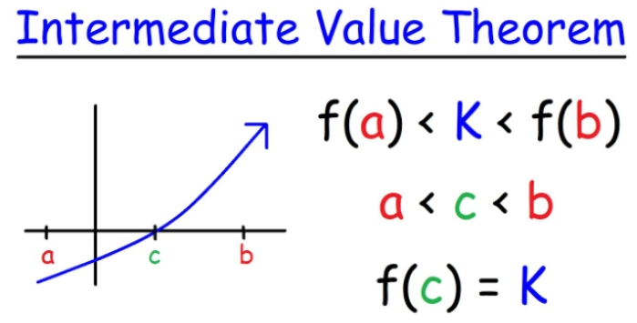

3. Limit#
3.1. Domain of functions#
a. Denominator cannot be 0 i. The domain of \(f(x) = \frac{1}{\sqrt{x^2 - 9}} \to x < -3 \land x > 3\)
b. Roots of even squared are greater than or equal to 0
c. The number of logarithm is greater than 0 (\(\ln x \to x > 0\))
d. Arcsin \(x\) and Arccos \(x \to x \leq 1\)
3.1.1. The equivalent of functions#
The same domain and the same mapping
i. \(f(x) = \ln(x - 1) \neq g(x) = \ln\sqrt{(x - 1)^2}\)
ii. \(f(x) = \frac{x}{x} \neq g(x) = 1\)
iii. \(f(x) = \sqrt{x^2} = g(x) = |x|\)
iv. \(f(x) = \begin{cases} -x, & x \geq 1 \\ 1, & x < 1 \end{cases} \neq g(x) = \begin{cases} 0, & x = 1 \\ 1, & x < 1 \end{cases}\)
3.1.2. The definition of limit#
Let \(f(x)\) be a function defined on an interval that contains \(x = a\), except possibly at \(x = a\). Then we say that,
if for every number \(\epsilon > 0\) there is some number \(\delta > 0\) such that
3.2. Solve the limit Problem#
3.2.1. Substitute Directly#
3.2.2. L’Hopital’s Law#
i. Infinity to infinity
ii. Infinity small to infinity small
3.2.3. The Property of infinity (∞) and infinity small (0)#
The product of infinity small with bounded function (e.g., \(\sin x \), \(\cos x \), \(\arctan x \), \(arccot x \)) is infinity small.
3.2.4. Three special cases#
Factorization
Rationalization of numerator and denominator
Get the highest order \(x\to \infty\)
3.3. Two important limit#
i. \(\lim_{u(x) \to 0} \frac{\sin u(x)}{u(x)} = 1\)
Prove using the definition of differential
a) \(\lim_{x \to 0} \sin x = x\)
\[ f'(x) = \frac{f(x + \delta) - f(x)}{\delta} \to f(x + \delta) = f(x) + f'(x) \ast \delta, \text{ when } \delta \to 0 \]\(\sin (x + \delta) \approx \sin x + \cos x \ast \delta\) when \(\delta \to 0\)
\(\sin \delta \approx 0 + \delta\), when \(\delta \to 0\)
Replace \(\delta\) with \(x\), \(\lim_{x \to 0} \sin x = x\)
ii. \(\lim_{A \to \infty} \left(1 + \frac{1}{A}\right)^A = e\)
Prove using Taylor’s Formula
\[ e < \left(1 + \frac{1}{k}\right)^k = 1 + \frac{k}{1} \left(\frac{1}{k}\right)^1 + \frac{k(k - 1)}{1 \cdot 2} \left(\frac{1}{k}\right)^2 + \frac{k(k - 1)(k - 2)}{1 \cdot 2 \cdot 3} \left(\frac{1}{k}\right)^3 + \cdots \]a)
\[ e = 1 + \frac{1}{2!} + \frac{1}{3!} + \cdots = e \]\(\lim_{x \to \infty} \left(1 - \frac{2}{x}\right)^x = e^{-2} = \frac{1}{e^2}\)
\(\lim_{x \to 0} (1 - 2x)^{\frac{1}{x}} = e^{-2}\)
\(\lim_{x \to \infty} \left(1 + \frac{1}{n}\right)^{n+3} = e\)
3.4. Equivalence of infinity small#
i. \(\lim_{x \to 0} \frac{\sin x}{x} = 1 \to \sin x \sim x \ (\text{when } x \to 0)\)
ii. \(1 - \cos x \sim \frac{1}{2} x^2\)
Prove: \(\lim_{x \to 0} \frac{1 - \cos x}{\frac{1}{2}x^2} = \frac{\sin x}{x} = 1\)
iii. \(\ln(1 + x) \sim x\)
Prove: \(\ln(1 + x + \delta) = \ln(1 + x) + \frac{\delta}{1 + x} = \ln 1 + \delta \to \ln(1 + \delta) \approx \delta \text{ when } \delta \to 0 \text{ and } x = 0\)
\(\lim_{x \to 0} \frac{\ln(1 + x)}{\sin 3x} = \frac{2x}{3x} = \frac{2}{3}\)
iv. \(e^x - 1 \sim x\)
v. \((1 + x)^\alpha = 1 + \alpha x\)
Prove: \((1 + x + \delta)^\alpha = (1 + x)^\alpha + (\alpha \delta)(1 + x)^{\alpha - 1} \to (1 + \delta)^\alpha = 1 + \alpha \delta \text{ when } \delta \to 0 \text{ and } x = 0\)
3.5. Continuous#
3.5.1. Continuous in functions#
\(f(x)\) has a definition at \(x_0\)
\(\lim_{x \to x_0} f(x) = f(x_0)\)
3.5.2. Example#
\(f(x) = \begin{cases} x^2 + 2a, & x \leq 0, \\ \frac{\sin x}{2x}, & x > 0 \end{cases}\)
is continuous at \(x = 0\), what’s the value of \(a\)?
Answer
\(\lim_{x \to 0} (x^2 + 2a) = 2a\), \(\lim_{x \to 0} \frac{\sin x}{2x} = \frac{1}{2} = 2a \to a = \frac{1}{4}\)
3.6. The break points of functions#
The point with invalid definition
The point with no limits
a. \(x = 3\) for \(f(x) = \frac{x^2 + 1}{x - 3}\), with limit \(= \infty\)
The point with limit that does not equal to its function value
3.7. The Intermediate Value Theorem#
If \(f(x)\) is continuous on the closed interval \([a, b]\) and \(k\) is any number between \(f(a)\) and \(f(b)\), then there exists at least one value \(c\) in the interval \((a, b)\) such that \(f(c) = k\).
a. Prove there is a solution of \(x^3 - 4x^2 + 1 = 0\) on the interval \((0,1)\).
